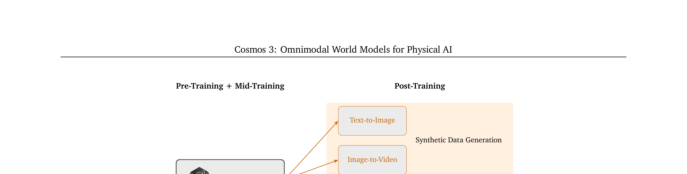
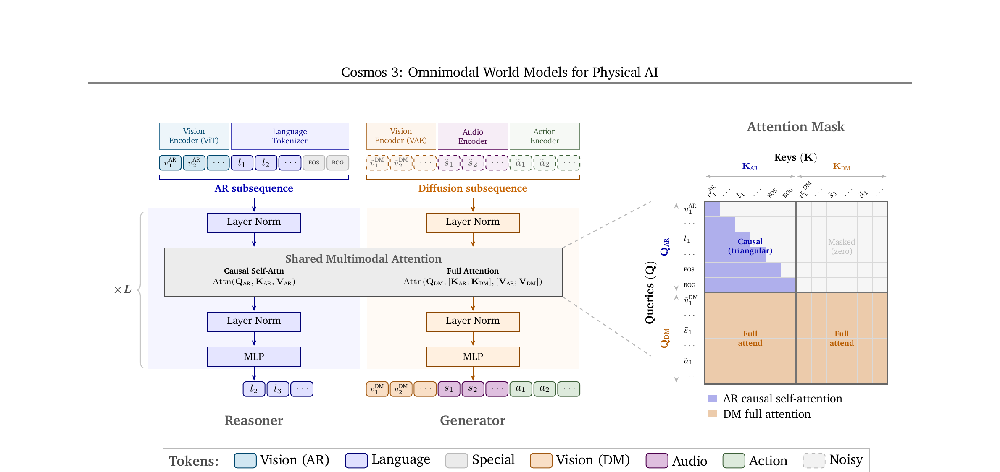
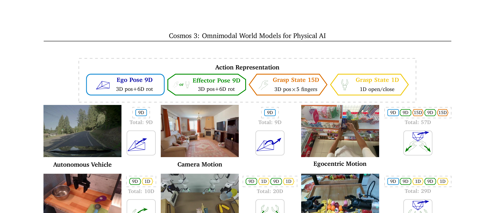
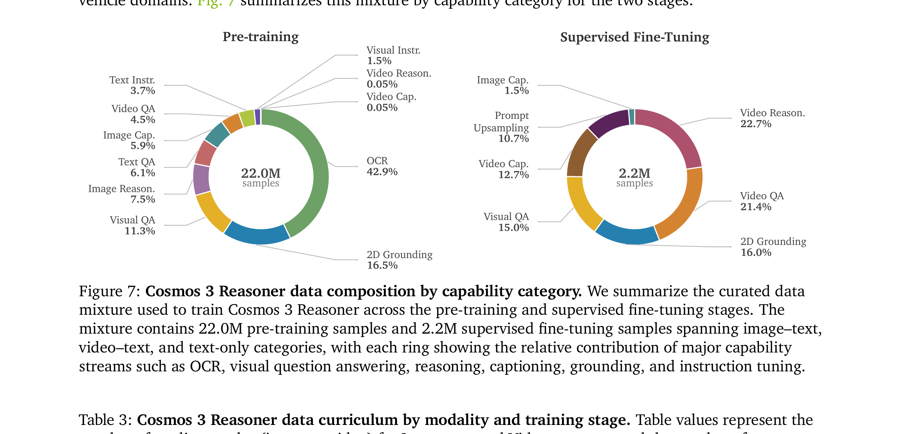
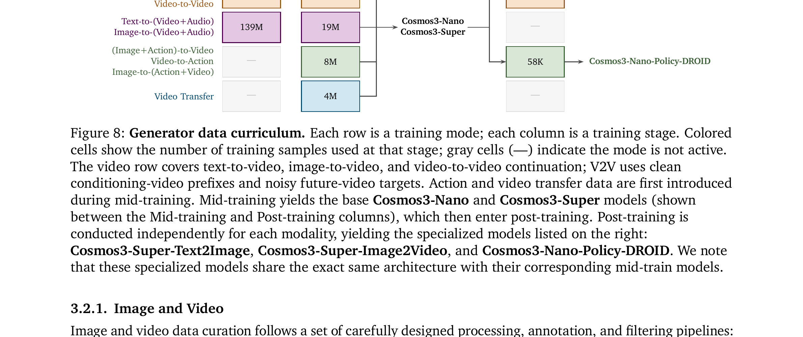

全模态统一世界模型 · Language + Image + Video + Audio + Action
为什么要统一五种模态：碎片化架构的根本问题
想象一个家庭服务机器人要完成"饭后收拾桌子"：它需要 VLM 识别餐具位置 → VLA 生成动作序列 → World Model 模拟动作效果 → 循环检验。在当前范式下，这是三个完全独立的模型拼在一起的碎片化架构，既低效又难以端到端优化。Cosmos 3 的核心主张是：理解（understanding）和生成（generation）不是两件事，而是同一件事的两面——把它们统一在一个模型里，是通往真正 Physical AI 的正确路径。
展开原文 · Cosmos 3 的核心主张
"We argue that this paradigm separation is fundamentally limiting: understanding requires reasoning about the future evolution of the world and the consequences of actions, while generation relies on a compact, structured representation of the world and agent behaviors. Unifying them into a single scalable framework is therefore essential for Physical AI."
Cosmos 3 把以下所有模型类型统一到一个架构：

| 模型名称 | Cosmos 3（Omnimodal World Models for Physical AI） |
| 发布时间 | 2026-06-09（本文档所在项目的最新论文） |
| 核心架构 | Mixture-of-Transformers（MoT）：每层双塔（Reasoner + Generator），共享 Attention |
| 支持模态 | Language · Image · Video · Audio · Action（五种模态同一模型） |
| 模型变体 | Cosmos3-Edge（4B MoT on 2B LLM）/ Nano（16B on 8B）/ Super（64B on 32B） |
| 开源协议 | OpenMDW-1.1 License（github.com/nvidia/cosmos） |
MoT 双塔架构：理解路径 + 生成路径共享一套 Transformer
上一节提出了"统一五种模态"的目标，但实现起来有一个关键技术挑战：VLM（如 Qwen3）用的是因果自回归（causal AR）生成 token；视频生成模型（如 Cosmos-Predict2.5）用的是双向注意力扩散。这两种机制如果硬塞进一个模型，会互相干扰。Cosmos 3 的解法是 Mixture-of-Transformers（MoT）：每一层 Transformer 内部有两套独立参数——一套处理理解（Reasoner），一套处理生成（Generator）——通过精心设计的 Attention Mask 让它们"共享感知，独立生成"。

两种 Attention 的正式定义
- $\text{Attn}_{\text{causal}}$
- 因果（下三角）掩码的注意力：token $i$ 只能 attend 到 $j \leq i$ 的 token，保证自回归生成的因果性
- $\mathbf{Q}_{\text{AR}}, \mathbf{K}_{\text{AR}}, \mathbf{V}_{\text{AR}}$
- 来自 AR 子序列（语言 + ViT 视觉 token）的 Query / Key / Value 投影
- $\text{Attn}_{\text{full}}$
- 完全双向注意力：生成 token 可以 attend 到序列中的任意位置，包括所有文字和视觉上下文
- $[\mathbf{K}_{\text{AR}};\mathbf{K}_{\text{DM}}]$
- Key 是 AR 和 DM 两部分 Key 的拼接——让 DM 生成时能"看到"文字 Prompt 和视觉条件
- 注意：AR tokens 不更新自 DM
- $\mathbf{O}_{\text{AR}}$ 只依赖 $\mathbf{K}_{\text{AR}}$，永远不依赖 $\mathbf{K}_{\text{DM}}$，因果路径不被生成路径污染
可以把 MoT 想象成一个法庭：Reasoner（法官）阅读证词（AR tokens）、推理、只参考已有陈述（causal attention）；Generator（书记员）负责生成文书（DM tokens），可以读取法庭所有内容（full attention over AR+DM）。但法官的判词（AR output）不会被书记员修改——两者职责分离，但共享同一个审判室（Transformer 层）。
五种模态的编码器：从真实世界到统一 Token 空间
MoT 骨架确定了，接下来是每种模态的"前处理"：如何把图像、视频、音频、动作分别转换成可以输入 MoT 的 token 向量？不同模态有各自专属的编码器，但最终都投影到同一个 $d_{\text{model}}$ 维空间，再加上模态特定的 embedding（learnable embedding，让 Transformer 知道这是哪种模态）。

四类编码器一览
Token 排布与六种生成模式
有了五种模态的编码器，接下来要解决"如何在一条 token 序列里安排不同模态的 token，让 Cosmos 3 能统一处理各种任务"。Cosmos 3 的设计是：先放 AR 子序列（用于理解/推理），再放 DM 子序列（用于生成），用 <EOS>+<BOG> 分隔。在这个统一格式下，仅通过改变哪些 token 是 clean（条件）、哪些是 noisy（待生成），就能切换不同的生成模式。
模式 1：语言生成（VLM 模式）
序列 $\mathbf{S} = [l_1,...,l_n,\langle\text{EOS}\rangle]$，只有 AR 子序列，没有 DM 子序列。输入文字/图像，输出文字。Cosmos 3 此时行为完全等同于标准 VLM（Qwen3-VL 风格）。ViT 编码的图像 token 插入 AR 子序列中。
模式 2：Text-to-Image（T2I）
$\mathbf{S}_{\text{T2I}} = [\mathbf{S}_{\text{AR}},\, \tilde{v}_1]$，其中 $\tilde{v}_1$ 是 noisy 图像 token。DM 子序列只有一帧含噪图像，通过迭代去噪（Flow Matching）生成图像。AR 子序列提供文字条件。
模式 3：Text-to-Video（T2V）+ Audio
$\mathbf{S}_{\text{T2V}} = [\mathbf{S}_{\text{AR}},\, \tilde{v}_{1:N},\, \tilde{s}]$，DM 子序列包含 $N$ 个 noisy 视频帧 token + noisy 音频 token $\tilde{s}$。视频和音频同时生成，通过 3D MRoPE 的绝对时序对齐（TPS 调制）保证视音频同步。
模式 4：Image-to-Video / Video-to-Video
$\mathbf{S}_{\text{V2V}} = [\mathbf{S}_{\text{AR}},\, v_{1:P},\, \tilde{v}_{P+1:N}]$，前 $P$ 帧是 clean 条件帧，后 $N-P$ 帧是 noisy 生成帧。$P=1$ 时是 I2V，$P>1$ 时是 V2V（视频延续）。
模式 5：Video Transfer（风格/控制转换）
$\mathbf{S}_{\text{Transfer}} = [\mathbf{S}_{\text{AR}},\, v^{\text{ctrl}}_{1:N},\, \tilde{v}_{1:N}]$，输入控制视频（深度图、边缘图、语义分割等）作为 clean 条件，生成对应的 RGB 视频。类似 ControlNet，但基于 MoT 统一框架。
模式 6：Action 生成（Policy / 正向 / 逆向动力学）
三种子模式：① Forward Dynamics：给定 clean 动作 $a_t$，预测 noisy 视频 $\tilde{v}_{t+1}$（环境反应）；② Inverse Dynamics：给定 clean 视频转变，推断 noisy 动作（哪个动作导致了这个变化）；③ Policy：同时预测 noisy 动作和 noisy 视频（联合策略 + 世界模型）。
不同模态（视频 24fps、音频 25 tokens/s、动作不同采样率）的 token 需要对齐到同一物理时间轴。Cosmos 3 引入 Absolute Temporal Modulation：每种模态有一个 TPS（Temporal steps Per Second），通过 $\delta t = \text{TPS}_{\text{base}} / \text{TPS}$ 把离散 token index 映射到物理时间，保证不同采样率的模态在同一时间轴上对齐。
数据：Reasoner 数据 + Generator 数据分轨训练
MoT 有两条路径，训练数据也分两轨：Reasoner 路径用有标注的"问答/理解"数据（image-text pair、video-text pair、VQA）；Generator 路径用"看数据、无标注"的生成数据（原始图像、视频、音频、动作轨迹）。两条轨道的数据质量要求和过滤方式都不同，但共享一个 Transformer 骨架训练。

Generator 数据：预训练 → 中间训练 → 后训练三阶段渐进

第一阶段：语义去重——用 Qwen3-VL-Embedding-8B 计算 conversation-level embedding，K-means 聚类后在各簇内做余弦相似度对比，去除相似度 >0.95 的样本（移除 4.23%）。
第二阶段：AI Judge 质量过滤——Gemma-4-31B 从三个维度打分（Faithfulness、Completeness、Correctness，各 1-5 分），预训练数据保留所有维度 ≥2 分（存留 78%），SFT 数据保留所有维度 ≥5 分（存留 46%）。确保无幻觉/无不完整/无错误的高质量监督信号。
训练配方：Reasoner 路径 + Generator 路径分离但参数共享
数据准备好了，训练策略是什么？关键挑战是：Reasoner（用 next-token prediction）和 Generator（用 Flow Matching）的训练目标完全不同，但共享同一套 Transformer 骨架。Cosmos 3 的解法是两条路径在同一批次中联合训练：每个 batch 里既有 Reasoner 样本（只激活 AR 子序列，计算 token 预测 loss），也有 Generator 样本（激活 DM 子序列，计算 Flow Matching loss），梯度叠加后统一更新所有参数。
Reasoner 训练：两阶段课程
- 预训练：19.7M Nemotron Nano 2 通用样本 + 2.3M 增强数学/视频/空间理解样本。从 Qwen3-VL 初始化权重（Nano/Super），只更新 Reasoner Tower 参数。
- SFT：2.2M Physical AI 专项样本，AI-judge 过滤到最高质量（5/5 分）。强化机器人操作推理（Action CoT）、自动驾驶 CoT、空间定位等能力。
Generator 训练：Pre → Mid → Post 三阶段
- 预训练：大规模图像/视频数据，从 Qwen3-VL 初始化 AR 参数，新增 Generator Tower 从零初始化。
- 中间训练：引入 Audio、Action、Transfer 模态，使用高质量精选数据，产出 Cosmos3-Nano / Cosmos3-Super 基座。
- 后训练：三条专化路径分别训练 T2I / I2V / Policy，每条路径只更新对应模态的参数（或全参数微调，视任务而定）。
实验（Appendix E.1）发现：当 Reasoner 和 Generator 联合训练时，Generator 生成的视频质量比单独训练高——即使测试时完全不用 Reasoner 路径。假设原因是：Reasoner 在训练时提供了更丰富的语义上下文（通过 Dual-Stream Joint Attention 传递给 Generator），相当于给生成模型"隐式地配了一个更强的文字理解器"。
模型变体：Edge / Nano / Super 三档规格
Cosmos 3 面向从边缘设备到数据中心的全谱算力场景，提供三个规格的 MoT 模型。所有变体共享 Dual-Tower MoT 架构，都从预训练 VLM 初始化（Nano/Super 从 Qwen3-VL，Edge 从零开始训练）。
| 变体 | MoT 总参数 | 底层 LLM | LLM 层数 | Hidden Dim | Attn Heads | KV Heads | FFN Dim |
|---|---|---|---|---|---|---|---|
| Cosmos3-Edge | ~4B | 2B dense（从零） | 28 | 2048 | 16 | 8 | 9216 |
| Cosmos3-Nano | ~16B | Qwen3-VL 8B | 36 | 4096 | 32 | 8 | 12288 |
| Cosmos3-Super | ~64B | Qwen3-VL 32B | 64 | 5120 | 64 | 8 | 25600 |
MoT 总参数 ≈ 底层 LLM × 2（Reasoner Tower + Generator Tower），再加编码器。Edge 使用 ReLU-squared 激活（非 SwiGLU），并去掉了 QK Normalization。
已开源：Cosmos3-Nano 和 Cosmos3-Super（及其后训练变体），OpenMDW-1.1 License。
待发布：Cosmos3-Edge（论文提及将在后续版本中开放）。
合成数据集：SDG-PhyxSim / SDG-RobotSim / SDG-DriveSim / SDG-SynHuman / SDG-Warehouse 五类合成数据集全部开源。
实验结果：Reasoner + Generator 双维度评测
Cosmos 3 需要同时在"理解"和"生成"两个维度接受评测：Reasoner 侧用通用 VQA/推理 benchmark（General、Robotics、Driving、Smart Infrastructure）；Generator 侧用 Text2Image、Image2Video、Audio、Action 等生成质量 benchmark。关键发现：Cosmos 3 在两个维度上同时与专业单模型持平或超越，同时规模只有专业模型的一小部分。
| 模型 | Reasoning General | Reasoning Robotics | Reasoning Driving | T2I Score | FD: Robot | Policy: Robot |
|---|---|---|---|---|---|---|
| Cosmos3-Super | 73.7 | 57.8 | 79.3 | 91.36* | 82.8 | 26.0* |
| Cosmos3-Nano | 69.6 | 55.1 | 76.0 | 84.61 | 82.7 | 39.7* |
| Gemini 3.1 Pro† | 77.5 | 58.2 | 47.2 | — | — | — |
| Qwen3-VL-32B | 72.8 | 52.6 | 40.7 | — | — | — |
| Wan2.2-A14B | — | — | — | — | 78.0 | — |
| π₀.₅ | — | — | — | — | — | 28.1 |
† 封闭模型。* 后训练专化变体。Policy: Robot 使用 RoboArena 评测，FD: Robot 使用 PAI-Bench Forward Dynamics 任务。
① Policy 任务：Cosmos3-Nano-Policy-DROID 在 RoboArena 取得 39.7 分，超过 π₀.₅（28.1 分）。
② T2I：Cosmos3-Super-Text2Image 被 ArtificialAnalysis 评为最佳开源文生图模型（91.36 分）。
③ Driving 推理：Cosmos3-Super 在自动驾驶推理上 79.3 分，大幅超过 Gemini 3.1 Pro（47.2）——因为 Cosmos 3 的训练数据包含大量 AV Action CoT 和驾驶场景 VQA。
与 Cosmos 2.5 的本质区别 + 对 Embodied AI 的意义
最后把 Cosmos 3 放回到整个 NVIDIA Physical AI 技术演进路线里，清楚地说明：它和 Cosmos-Predict2.5 不是"同一赛道的升级版本"，而是"换了一条赛道"。理解这个区别对于选择下游工作基础至关重要。
| 对比维度 | Cosmos-Predict2.5 | Cosmos 3 |
|---|---|---|
| 定位 | 视频世界模型基座 | 全模态世界模型 |
| 架构 | DiT（单塔，纯扩散） | MoT（双塔：理解+生成并行） |
| 理解能力 | 无（靠外部 VLM 输入文字） | 内置（AR 子序列 = VLM） |
| 动作支持 | 无（靠下游工作注入） | 原生（Action 第一类模态） |
| 音频 | 不支持 | 支持（Audio VAE + TPS 对齐） |
| 适合下游工作 | DreamDojo / MotionWAM（加动作条件） | 直接后训练为 Policy / T2I / I2V |
| 开源时间 | 2026-02 | 2026-06 |
Cosmos-Predict2.5 就像是一个高质量的"视频生成工具"——你要训练机器人策略，还需要另外找一个 VLM 处理指令、一个策略网络输出动作，再把三者拼接起来。
Cosmos 3 则是一个"统一工厂"——输入视觉/语言/动作信号，输出视觉/语言/动作响应，不需要三个独立模型拼凑。这种端到端的能力使得 Cosmos 3 可以直接后训练为策略模型（Cosmos3-Nano-Policy-DROID），而不需要像 DreamDojo 那样额外设计 Latent Action 注入机制。
短期（2026 下半年）：Cosmos 3 作为开源 Foundation Model，可以直接在机器人数据上做 Policy 后训练，不再需要依赖 OpenVLA / π₀ 等架构。Cosmos3-Nano-Policy-DROID 已经超过 π₀.₅，提供了一个强大的新 baseline。
中期：MoT 架构天然支持 world-action 联合建模——在预测未来视频的同时预测动作（Policy 模式），这是传统 VLA 和 World Model 割裂架构无法做到的。这可能成为下一代 VLA 的主流设计范式。
研究挑战：① MoT 的训练稳定性（两条路径梯度对抗）需要仔细调节；② 在 Policy 任务上 64B 的 Super 反而不如 16B 的 Nano（39.7 vs 26.0），说明大模型 + 少量 Robot 数据可能过拟合；③ 长视频自动回归的错误积累问题仍未解决。
① 计算代价高：64B Super 变体需要大量 GPU 做推理，边缘部署仍依赖 Edge 变体（4B，待开放）。
② Action 空间受限：目前仅支持 SE(3) 位姿类动作（关节角度、末端位姿、夹爪开合），不支持力觉/触觉等传感器类动作空间。
③ 音频生成评测覆盖有限：Cosmos 3 是首个在 Physical AI 框架里集成音频的世界模型，但相关 benchmark 还不成熟。
← 返回：Cosmos-Predict2.5（视频世界模型基座）